Seleção e Visualização de Dados Matriciais¶
A principal fonte de dados matriciais é o próprio catálogo do Google Earth Engine, que abriga coleções dos principais programas internacionais de sensoriamento remoto:
- Landsat — uma das fontes mais antigas e confiáveis de imagens da Terra (desde 1972), ideal para monitorar mudanças no uso da terra, desmatamento e agricultura;
- Sentinel — do programa Copernicus da União Europeia, com imagens ópticas (Sentinel-2) e de radar (Sentinel-1), usadas no monitoramento ambiental, na detecção de incêndios e no acompanhamento de eventos extremos;
- MODIS — imagens diárias de resolução moderada;
- SRTM — o modelo digital de elevação que vimos no Capítulo 2;
- além de dados climáticos, mapas de cobertura da terra e muitos outros.
Imagens de programas que não estão no catálogo, como as do CBERS, podem ser enviadas como assets, de modo semelhante ao que fizemos com os shapefiles.
No caso das imagens de satélite, é mais comum trabalhar com coleções do que com imagens individuais. Ainda assim, como nos dados vetoriais, podemos acessar uma imagem pelo seu identificador:
var image = ee.Image('LANDSAT/LC08/C02/T1_TOA/LC08_220062_20190504');
Map.addLayer(image, {}, 'Landsat 8');
Map.centerObject(image, 8);
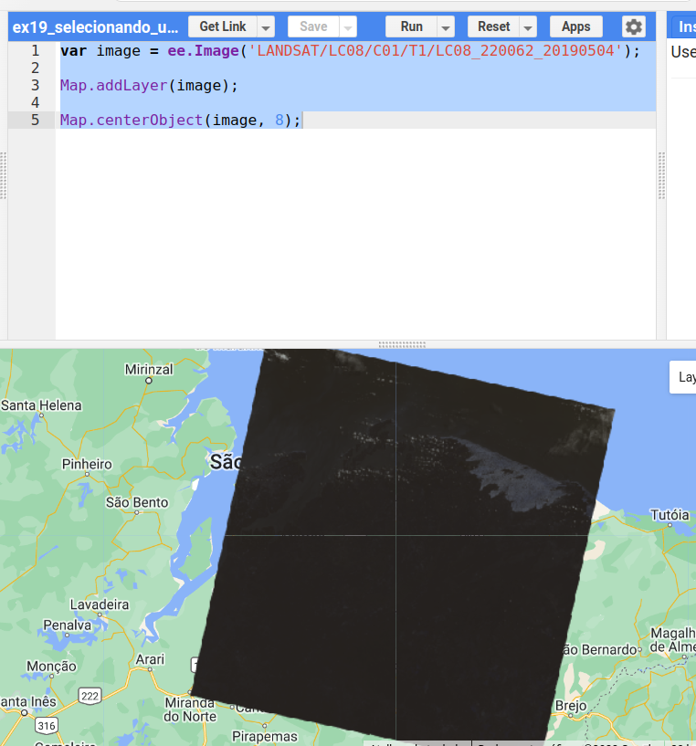
A imagem aparece quase preta e pouco informativa: faltam os parâmetros de visualização.
🎨 Visualização de dados matriciais¶
A escolha dos parâmetros de visualização é crucial para a interpretação de imagens. Vamos usar como exemplo uma imagem de NDVI (Normalized Difference Vegetation Index), cujos valores variam de −1 a 1 (o índice será explicado no Capítulo 8):
var image = ee.Image('LANDSAT/LC08/C02/T1_TOA/LC08_220062_20190504');
var ndvi = image.normalizedDifference(['B5', 'B4']);
Mínimo e máximo¶
Por padrão, uma imagem de uma banda é representada em tons de cinza: o valor mínimo é mapeado para o preto e o máximo para o branco. No caso do NDVI, os valores de −1 a 1 seriam distribuídos pelos 256 tons de cinza da tela:
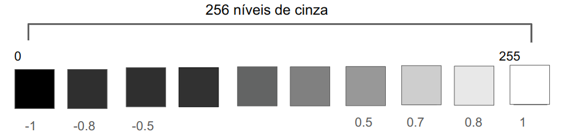
Mas os valores de uma cena real raramente ocupam todo o intervalo teórico. Para saber quais são os valores mais frequentes, recorremos ao histograma:
var roi = ee.Geometry.Polygon(
[[[-44.40094120999187, -2.2314841101817464],
[-44.40094120999187, -2.8900019126297876],
[-43.43963749905437, -2.8900019126297876],
[-43.43963749905437, -2.2314841101817464]]]);
var image = ee.Image('LANDSAT/LC08/C02/T1_TOA/LC08_220062_20190504');
var ndvi = image.normalizedDifference(['B5', 'B4']);
var histograma = ui.Chart.image.histogram({image: ndvi, region: roi, scale: 30});
print(histograma);
Map.addLayer(roi, {}, 'Região do histograma');
Map.centerObject(roi, 9);
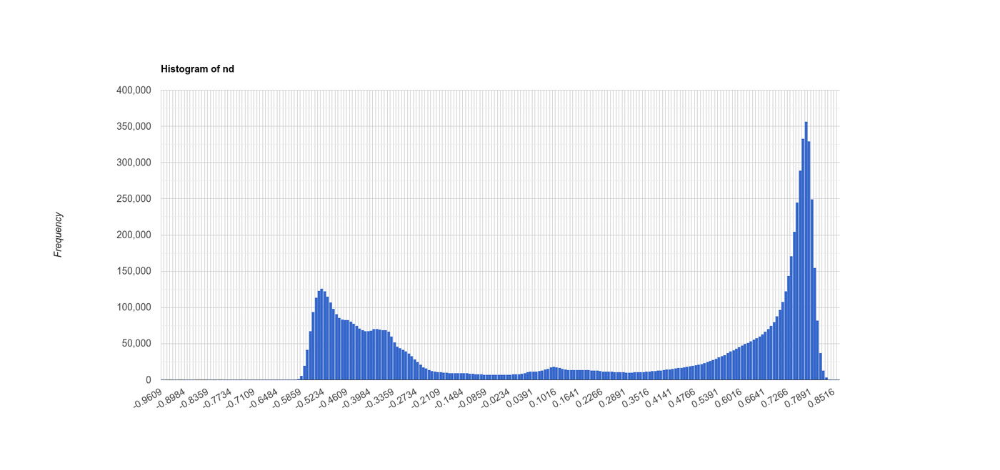
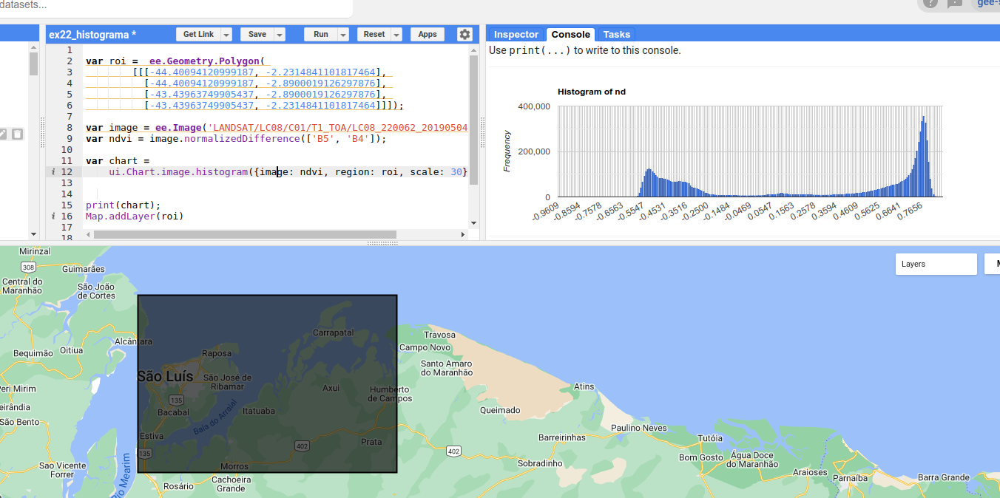
Pelo histograma, os valores se concentram entre −0,5 e 0,8. Podemos então definir esses limites como mínimo e máximo: todos os valores abaixo de −0,5 serão mapeados para o preto, e todos acima de 0,8 para o branco. Os 256 tons de cinza passam a ser usados apenas onde há dados — e o contraste melhora.
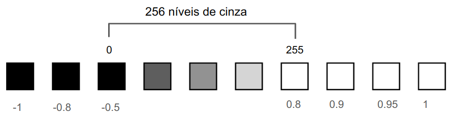
| Mínimo −1 e máximo 1 | Mínimo −0,5 e máximo 0,8 |
|---|---|
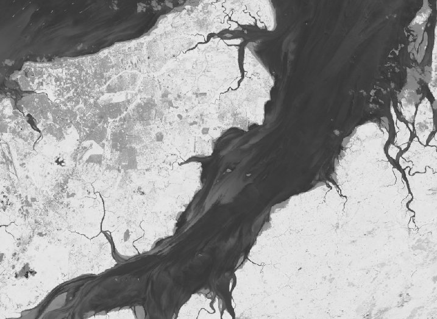 |
Paletas de cores¶
Em vez de tons de cinza, podemos definir uma paleta de cores:
Com essa paleta, o valor mínimo é mapeado para o vermelho, o máximo para o verde, e os valores intermediários são interpolados linearmente, passando pelo amarelo. Os parâmetros de mínimo e máximo continuam tendo grande impacto, como mostra a figura: em (a), sem paleta; em (b), com a paleta e os limites padrão; em (c), com a paleta e os limites ajustados.
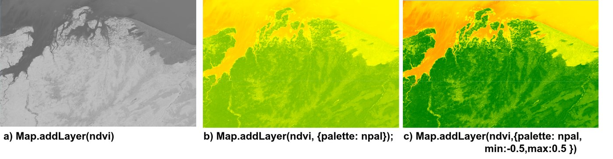
var image = ee.Image('LANDSAT/LC08/C02/T1_TOA/LC08_220062_20190504');
var ndvi = image.normalizedDifference(['B5', 'B4']);
var paleta = ['red', 'yellow', 'green'];
Map.addLayer(ndvi, {}, 'Tons de cinza');
Map.addLayer(ndvi, {min: -0.5, max: 0.8}, 'Tons de cinza, -0.5 a 0.8');
Map.addLayer(ndvi, {palette: paleta}, 'Paleta sem min e max');
Map.addLayer(ndvi, {palette: paleta, min: -0.5, max: 0.8}, 'Paleta, -0.5 a 0.8');
Map.centerObject(ndvi, 8);
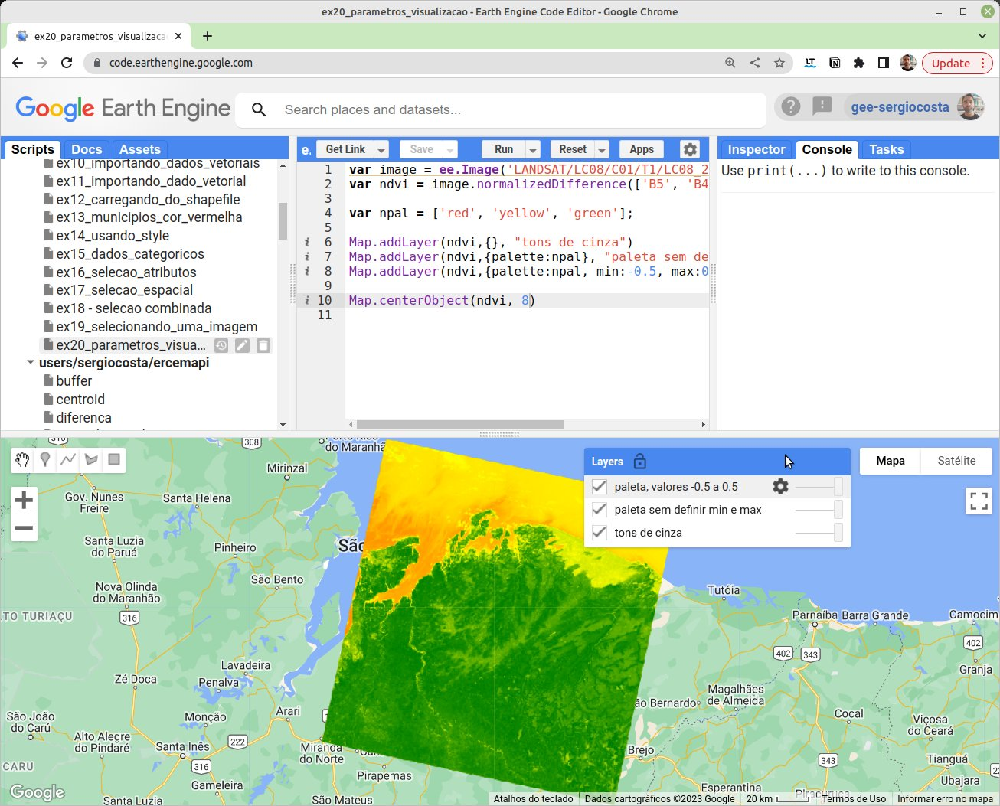
Ajustando pelo gerenciador de camadas
No gerenciador de camadas (Layers), clique na engrenagem ao lado de uma camada para ajustar interativamente o mínimo, o máximo, a paleta e a opacidade. A opção Stretch calcula automaticamente limites a partir do histograma da área visível. Depois de encontrar bons valores, clique em Import para levá-los ao seu código.
Paletas prontas
Criar boas paletas é difícil. O pacote comunitário ee-palettes oferece dezenas delas:
Composições coloridas¶
Na interpretação de imagens multiespectrais, é prática comum criar composições coloridas: associar três bandas aos três canais de cor da tela — vermelho (R), verde (G) e azul (B). Nas composições em cor verdadeira, cada banda vai para o canal correspondente: a banda do vermelho no canal vermelho, a do verde no verde e a do azul no azul. Nas composições em falsa cor, usam-se outras combinações. A composição B5 (infravermelho próximo), B4 (vermelho) e B3 (verde) do Landsat 8, por exemplo, realça a vegetação, que aparece em tons de vermelho — lembre-se da assinatura espectral da vegetação, com alta reflectância no infravermelho próximo.
var image = ee.Image('LANDSAT/LC08/C02/T1_TOA/LC08_220062_20190504');
var corVerdadeira = ['B4', 'B3', 'B2'];
var falsaCor = ['B5', 'B4', 'B3'];
Map.addLayer(image, {bands: falsaCor, min: 0.03, max: 0.4}, 'Falsa cor 5-4-3');
Map.addLayer(image, {bands: corVerdadeira, min: 0.03, max: 0.4}, 'Cor verdadeira 4-3-2');
Map.centerObject(image, 8);
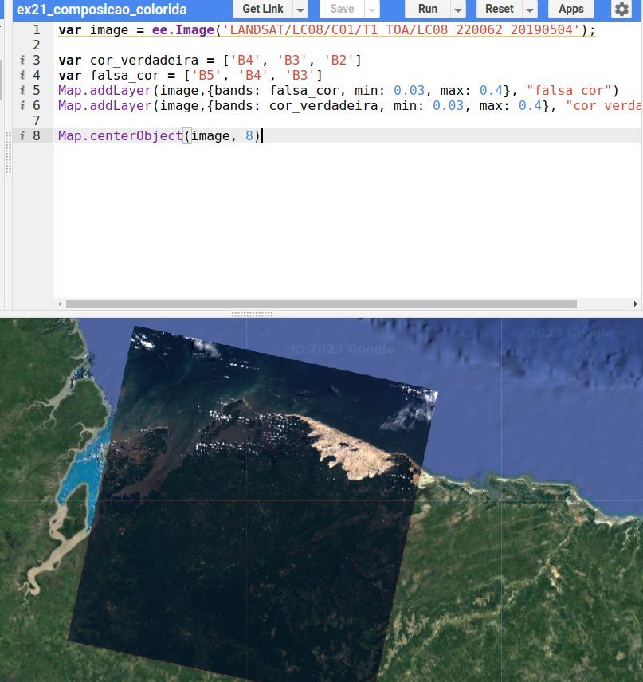
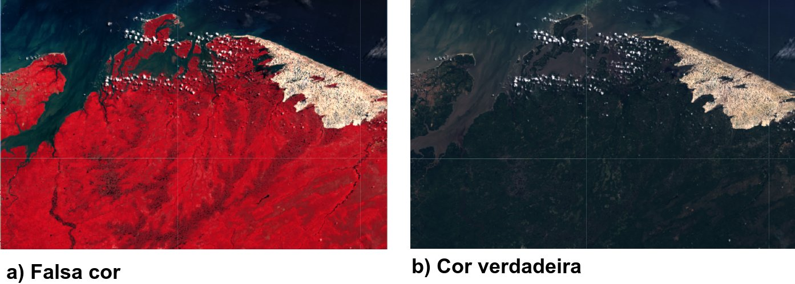
Reflectância no topo da atmosfera
Os limites de 0,03 a 0,4 fazem sentido porque a coleção T1_TOA já está em unidades de reflectância no topo da atmosfera (Top of Atmosphere), entre 0 e 1. Coleções em números digitais ou em reflectância de superfície exigem outros limites (Capítulo 8).
Antes de montar uma composição
É importante saber em que faixa do espectro está cada banda (tabela do Capítulo 2) e qual a assinatura espectral do alvo que se deseja realçar. Algumas composições clássicas para Landsat 8/9:
| Composição (R-G-B) | Uso típico |
|---|---|
| 4-3-2 | Cor verdadeira, próxima do que o olho humano vê |
| 5-4-3 | Falsa cor: vegetação em vermelho |
| 6-5-4 | Distinção entre vegetação, solo exposto e áreas urbanas |
| 7-6-4 | Falsa cor urbana: áreas urbanas, solos e geologia |
| 7-6-5 | Penetração atmosférica: atravessa melhor a fumaça e a névoa |
| 6-5-2 | Agricultura: culturas saudáveis em verde vivo |
🔎 Seleção de dados matriciais¶
Com coleções que somam centenas de milhares de imagens, a seleção é o primeiro passo de qualquer análise. As imagens de satélite são selecionadas por critérios espaciais, temporais e de metadados — os mesmos disponíveis nos formulários dos catálogos tradicionais, como o do INPE:
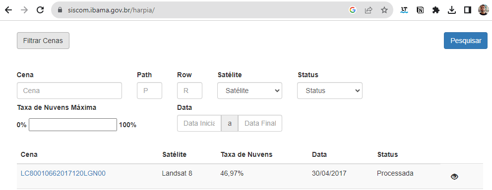
A diferença é que, no GEE, esses critérios são escritos em um script: um processo que, de outra forma, exigiria preencher cada campo e clicar em "pesquisar", torna-se automatizado e reprodutível, e permite combinações que nenhum formulário oferece.
Seleção espacial¶
Queremos apenas as imagens que cobrem o município de São Luís. Primeiro, selecionamos o município pela seleção por atributo que vimos no capítulo anterior (o código IBGE de São Luís é 2111300); depois, filtramos a coleção de imagens com .filterBounds():
var municipios = ee.FeatureCollection(
'projects/ee-sergiocosta/assets/MA_Municipios_2022'
);
// código IBGE de São Luís
var saoluis = municipios.filter(ee.Filter.eq('CD_MUN', '2111300'));
var imagens = ee.ImageCollection('LANDSAT/LC09/C02/T1')
.filterBounds(saoluis);
print('Quantidade de imagens:', imagens.size());
Seleção temporal¶
Em aplicações de sensoriamento remoto, quase sempre precisamos de uma seleção temporal. O código a seguir seleciona apenas as imagens de 1º de janeiro a 29 de outubro de 2022 (a data final do .filterDate não é incluída):
var imagens = ee.ImageCollection('LANDSAT/LC09/C02/T1')
.filterBounds(saoluis)
.filterDate('2022-01-01', '2022-10-30');
print('Quantidade de imagens:', imagens.size()); // 49, quando este texto foi escrito
Adicione a primeira imagem da coleção ao mapa e observe:
var primeiraImagem = imagens.first();
Map.addLayer(primeiraImagem, {bands: ['B4', 'B3', 'B2'], min: 5000, max: 15000}, 'Primeira imagem');
Map.centerObject(saoluis, 9);
É bem provável que ela esteja coberta de nuvens — algo muito comum no litoral maranhense durante a estação chuvosa.
Seleção por metadados¶
Em vez de atributos, as imagens têm metadados: informações registradas para cada cena, como data, sensor, ângulo solar e o percentual de cobertura de nuvens. Clique em uma imagem com a aba Inspector aberta para vê-los, ou imprima a lista completa:
Os mesmos filtros que usamos para atributos servem para metadados. O código a seguir seleciona apenas as imagens com menos de 20% de nuvens e as ordena, de forma crescente, pela cobertura de nuvens:
var municipios = ee.FeatureCollection(
'projects/ee-sergiocosta/assets/MA_Municipios_2022'
);
var saoluis = municipios.filter(ee.Filter.eq('CD_MUN', '2111300'));
var imagens = ee.ImageCollection('LANDSAT/LC09/C02/T1')
.filterBounds(saoluis)
.filterDate('2022-01-01', '2022-10-30')
.filter(ee.Filter.lt('CLOUD_COVER', 20))
.sort('CLOUD_COVER');
print('Quantidade de imagens:', imagens.size()); // 8, quando este texto foi escrito
var melhor = imagens.first(); // a de menor cobertura de nuvens
Map.addLayer(melhor, {bands: ['B4', 'B3', 'B2'], min: 5000, max: 15000}, 'Menos nuvens');
Map.centerObject(saoluis, 9);
filterMetadata está obsoleto
Materiais mais antigos (inclusive versões anteriores deste curso) usam .filterMetadata('CLOUD_COVER', 'less_than', 20). Esse método foi descontinuado pelo GEE; use .filter(ee.Filter.lt('CLOUD_COVER', 20)).
Path e row¶
Talvez a imagem com menos nuvens nem seja da área que você esperava: o município de São Luís é coberto por mais de uma cena Landsat. As cenas são indexadas pelo par path/row do sistema de referência mundial (WRS-2): o path corresponde às órbitas, que se sucedem de leste para oeste, e o row à posição ao longo da órbita, de norte para sul. A cena que cobre a Ilha do Maranhão é a 220/062. Filtrando por esses metadados, não é mais necessário usar .filterBounds(), pois o par já define a localização:
var imagens = ee.ImageCollection('LANDSAT/LC09/C02/T1')
.filterDate('2022-01-01', '2022-10-30')
.filter(ee.Filter.lt('CLOUD_COVER', 20))
.filter(ee.Filter.eq('WRS_PATH', 220))
.filter(ee.Filter.eq('WRS_ROW', 62))
.sort('CLOUD_COVER');
print('Quantidade de imagens:', imagens.size());
Principais parâmetros para seleção de imagens
| Critério | Método | Exemplo |
|---|---|---|
| Espacial | .filterBounds(geometria) |
.filterBounds(saoluis) |
| Temporal | .filterDate(início, fim) |
.filterDate('2022-01-01', '2023-01-01') |
| Sazonal | ee.Filter.calendarRange |
.filter(ee.Filter.calendarRange(6, 9, 'month')) |
| Metadados | ee.Filter.lt/eq/... |
.filter(ee.Filter.lt('CLOUD_COVER', 20)) |
| Ordenação | .sort(propriedade) |
.sort('CLOUD_COVER') |
📝 Síntese¶
- A visualização de imagens depende do mínimo, do máximo (escolhidos com apoio do histograma) e da paleta; imagens multiespectrais são exibidas por composições coloridas.
- A seleção de imagens combina filtros espaciais (
filterBounds), temporais (filterDate,calendarRange) e de metadados (CLOUD_COVER,WRS_PATH,WRS_ROW).
✏️ Exercícios¶
Estes exercícios fazem parte da Atividade 1.
- Gere o histograma do NDVI de uma região da sua escolha e escolha, a partir dele, os limites de visualização. Justifique a escolha.
- Exiba a cena
LC08_220062_20190504nas composições 4-3-2, 5-4-3 e 6-5-4. Descreva o que cada uma realça nos Lençóis Maranhenses. - Selecione as imagens Landsat 8 (
LANDSAT/LC08/C02/T1_TOA) que cobrem a sua cidade em 2023 com menos de 10% de nuvens. Quantas são? Exiba a de menor cobertura. - Repita o exercício anterior apenas para os meses de julho a novembro, com
ee.Filter.calendarRange. O número de imagens aumentou ou diminuiu em relação a uma seleção de janeiro a maio? Por quê? - Descubra o path/row da cena Landsat que cobre a sua cidade (dica: use o Inspector sobre uma imagem) e refaça a seleção usando esses metadados.